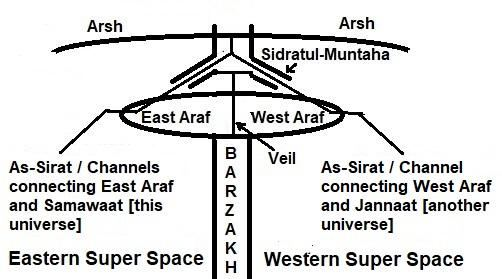

The Arsh is beyond the Universe. It is the greatest of all creations—greater than the Universe and Jannaat. The Headquarters of Allah is located in the Arsh. The CCU is a device of this Headquarters:
আরশ মহাবিশ্বের বাইরে। এটি সমস্ত সৃষ্টির মধ্যে সর্বশ্রেষ্ঠ - মহাবিশ্ব এবং জান্নাতের চেয়েও মহান। আল্লাহর সদর দপ্তর আরশে অবস্থিত। CCU এই সদর দপ্তরের একটি ডিভাইস:
―After traveling Seven Skies, I was raised to the extreme height. I reached a smooth plain land where only the noise of Pen was being heard.‖ [Bukhari]
-সেভেন স্কাইস ভ্রমণের পর আমি চরম উচ্চতায় উঠলাম। আমি একটি মসৃণ সমতল ভূমিতে পৌঁছলাম যেখানে কেবল কলমের আওয়াজ শোনা যাচ্ছিল।'' [বুখারি]
In above Hadith, the ―extreme height‖ means the Arsh where Prophet (pbuh) heard the sound of Pen. The Pen is a component of the CCU. So, the CCU is in the Arsh.
উপরের হাদিসে ‘অতি উচ্চতা’ মানে আরশ যেখানে নবী (সাঃ) কলমের আওয়াজ শুনতেন। পেন হল CCU এর একটি উপাদান। তাই, সিসিইউ আরশে আছে।
5b. Araf and Veil
5 খ. আরাফ ও পর্দা
Araf‘ means ‗Elevated Land.‘ It is located at the top of Barzakh—just below the Arsh at the point of Sidratul- Muntaha (see Figure 6.3). The Araf is the preliminary sanctuary for the universal angels. All angels were created at the same time and were accommodated in the Araf. The Araf is divided by a veil into two parts, the East Araf and the West Araf. ―Between them shall be a veil, and on the Araf will be men who would know everyone by his marks: they will call out to the companions of the Jannaat, "peace on you": they will not have entered, but they will have an assurance (thereof).‖ [Al Quran 7:46]
আরাফ' মানে 'উচ্চ ভূমি' এটি বরজাখের শীর্ষে অবস্থিত - সিদরাতুল মুনতাহা বিন্দুতে আরশের ঠিক নীচে (চিত্র 6.3 দেখুন)। আরাফ হল সর্বজনীন ফেরেশতাদের জন্য প্রাথমিক আশ্রয়স্থল। সমস্ত ফেরেশতাকে একই সময়ে সৃষ্টি করা হয়েছিল এবং আরাফে স্থান দেওয়া হয়েছিল। আরাফ একটি পর্দা দ্বারা দুই ভাগে বিভক্ত, পূর্ব আরাফ এবং পশ্চিম আরাফ। "তাদের মধ্যে একটি পর্দা থাকবে, এবং আরাফে এমন লোক থাকবে যারা প্রত্যেককে তার চিহ্ন দ্বারা চিনবে: তারা জান্নাতের সাথীদের ডেকে বলবে, "তোমাদের উপর শান্তি": তারা প্রবেশ করবে না, তবে তাদের নিশ্চয়তা থাকবে।" [আল কুরআন 7:46]
The East Araf is for the angels of the Samawaat (this universe), and the West Araf is for the angels of the Jannaat:
পূর্ব আরাফ হল সামাওয়াতের ফেরেশতাদের জন্য এবং পশ্চিম আরাফ হল জান্নাতের ফেরেশতাদের জন্য:
―Lord of the two Easts (East Araf and the Samawaat) and Lord of the two Wests (West Araf and the Jannaat). Then which of the favors of your Lord will ye deny?‖ [Al Quran 55:17-18]
- দুই পূর্বের (পূর্ব আরাফ ও সামাওয়াত) এবং দুই পশ্চিমের (পশ্চিম আরাফ ও জান্নাত) প্রভু। তাহলে তোমরা তোমাদের পালনকর্তার কোন কোন অনুগ্রহকে অস্বীকার করবে?'' [আল কুরআন ৫৫:১৭-১৮]
There is a house of assembly in the East Araf called Baitul-Mamur. Prophet (pbuh) visited the house during the Night Journey (Miraj).
পূর্ব আরাফে বায়তুল-মামুর নামে একটি সমাবেশ আছে। রাসুলুল্লাহ (সাঃ) রাতের যাত্রায় (মিরাজ) বাড়িতে গিয়েছিলেন।
―Then I was taken to the Baitul-Mamur. Every day 70,000 angels visit it and never returning to it again, another (group) coming after them.‖ [Bukhari]
- তারপর আমাকে বায়তুল মামুরে নিয়ে যাওয়া হলো। প্রতিদিন 70,000 ফেরেশতা এটি পরিদর্শন করে এবং আর কখনও ফিরে আসে না, তাদের পিছনে আরেকটি (দল) আসছে।' [বুখারি]
The veil cannot be crossed without through Sidratul- Muntaha.
সিদরাতুল মুনতাহা ছাড়া পর্দা অতিক্রম করা যায় না।
5c. Sidratul-Muntaha
5 গ. সিদরাতুল মুনতাহা
During the Night Journey (Miraz), Prophet (pbuh) initially observed Sidratul-Muntaha from the Seventh Sky. It looked like a tree in the horizon. For this reason, it is called Sidratul-Muntaha (lote-tree in the horizon). See figure 6.3. The Sidratul-Muntaha looks like an up-side-down plant. It is rooted in the Arsh and hanging over the Araf with two main branches. The eastern branch is extended over the East Araf, and the western branch is extended over the West Araf. The Sidratul-Muntaha looks like a plant, but it is not a plant. It is based on a huge server computer. It is the communication hub of the universes.
নাইট জার্নি (মিরাজ) চলাকালীন, নবী (সাঃ) প্রথমে সপ্তম আকাশ থেকে সিদরাতুল মুনতাহা অবলোকন করেন। দিগন্তে একটা গাছের মত লাগছিল। এ কারণে একে সিদরাতুল মুনতাহা (দিগন্তে লোট-বৃক্ষ) বলা হয়। চিত্র 6.3 দেখুন। সিদরাতুল মুনতাহা দেখতে অনেকটা উপরে-নিচে গাছের মতো। এটি আরশে মূল এবং দুটি প্রধান শাখা সহ আরাফের উপর ঝুলে আছে। পূর্ব শাখা পূর্ব আরাফের উপর প্রসারিত এবং পশ্চিম শাখা পশ্চিম আরাফের উপর প্রসারিত। সিদরাতুল মুনতাহা দেখতে একটি গাছের মতো, কিন্তু এটি একটি উদ্ভিদ নয়। এটি একটি বিশাল সার্ভার কম্পিউটারের উপর ভিত্তি করে। এটি মহাবিশ্বের যোগাযোগ কেন্দ্র।
―Whatever descends from above (from the Arsh) descends to Sidratul-Muntaha. Whatever ascends from below (Araf) ascends to Sidratul-Muntaha‖ [Hadith]
- যা কিছু উপর থেকে (আরশ থেকে) অবতীর্ণ হয় তা সিদরাতুল মুনতাহা পর্যন্ত অবতরণ করে। যা কিছু নিচ থেকে (আরাফ) আরোহণ করে তা সিদরাতুল মুনতাহা পর্যন্ত আরোহণ করে” [হাদিস]
The CCU is a standalone computer for security reasons. The Scribe Angels of the Arsh read the information from the CCU and write it on the root of Sidratul-Muntaha.
নিরাপত্তার কারণে সিসিইউ একটি স্বতন্ত্র কম্পিউটার। আরশের স্ক্রাইব ফেরেশতারা সিসিইউ থেকে তথ্য পড়ে সিদরাতুল মুনতাহার মূলে লেখেন।
―…For, it is indeed a Message of instruction. Therefore, let who-so will keep it in remembrance—in Books (Lawh-Mahfuz) held in honor, exalted, kept pure and holy by the hands of Scribes (Scribe Angels).‖ [Al Quran 80: 11-15]
--...কারণ, এটি প্রকৃতপক্ষে নির্দেশের একটি বার্তা। অতএব, কে তা স্মরণে রাখুক- গ্রন্থে (লাহ-মাহফুজ) সম্মানিত, উন্নীত, শুদ্ধ ও পবিত্র লেখকদের হাতে রাখা হয়েছে।'' [আল কুরআন 80: 11-15]
The root of Sidratul-Muntaha is in the Arsh. The information from the CCU is fed into the root of Sidratul- Muntaha. From the root (server) of Sidratul-Muntaha, the information descends to the hanging branches. The universal angels receive the information through the leaves of these branches and act accordingly. When the Prophet (pbuh) visited Araf, he saw thousands of angels falling into Sidratul-Muntaha. It resembled thousands of insects falling onto a tree. They were descending to receive information and orders. If the CCU is considered as the Head of the Cybernetic System, the Sidratul-Muntaha should be considered as the Heart. Sidratul-Muntaha also serves as a passage for creatures and objects. After entering Sidratul-Muntaha from East Araf, one can ascend to the Arsh. From the Arsh or junction point of the branches, one can move toward the Jannaat. However, no one is allowed to pass without authority from the CCU. During the Final Judgment, Sidratul-Muntaha will prevent some people on the East Araf from entering and moving toward Jannaat, as they should have been destined for hell according to its record or standard. After the Judgment, when Allah will return to the Arsh, He will issue the order through the CCU to release them. During the Night Journey (Miraj), Prophet (pbuh) was granted permission to ascend. He left Gabriel behind, in the East Araf (below the eastern branch of Sidratul- Muntaha which is extended into the East Araf) and continued alone into the Arsh. At the highest point of his journey, he heard the sound of the Pen (CCU) From the Arsh, the Prophet (pbuh) descended into the Jannaat through the western branch of Sidratul-Muntaha. This was his ‗first descent‘ of the Night Journey (Miraj). While returning to the Samawaat (this universe) via the Arsh and East Araf, he found Gabriel waiting in the same place. This marked the ‗second descent‘ of the Night Journey (Miraj):
সিদরাতুল মুনতাহার মূল আরশে রয়েছে। সিসিইউ থেকে পাওয়া তথ্য সিদরাতুল মুনতাহার মূলে দেওয়া হয়। সিদরাতুল মুনতাহার মূল (সার্ভার) থেকে তথ্যগুলো ঝুলন্ত শাখায় অবতীর্ণ হয়। সার্বজনীন ফেরেশতারা এই শাখাগুলির পাতার মাধ্যমে তথ্য গ্রহণ করে এবং সেই অনুযায়ী কাজ করে। রাসুল (সাঃ) যখন আরাফ সফরে গিয়েছিলেন, তখন তিনি হাজার হাজার ফেরেশতাকে সিদরাতুল মুনতাহায় পড়ে থাকতে দেখেছিলেন। এটি একটি গাছের উপর পড়ে থাকা হাজার হাজার পোকামাকড়ের অনুরূপ। তারা তথ্য ও আদেশ গ্রহণের জন্য নামছিল। সিসিইউকে সাইবারনেটিক সিস্টেমের প্রধান হিসাবে বিবেচনা করা হলে, সিদরাতুল-মুনতাহাকে হৃদয় হিসাবে বিবেচনা করা উচিত। সিদরাতুল মুনতাহা প্রাণী এবং বস্তুর জন্য একটি উত্তরণ হিসাবেও কাজ করে। পূর্ব আরাফ থেকে সিদরাতুল মুনতাহায় প্রবেশের পর আরশে আরোহণ করা যায়। শাখার আরশ বা সংযোগস্থল থেকে জান্নাতের দিকে যাওয়া যায়। তবে সিসিইউ থেকে কর্তৃপক্ষ ছাড়া কাউকে পাস করতে দেওয়া হচ্ছে না। চূড়ান্ত বিচারের সময়, সিদরাতুল-মুন্তাহা পূর্ব আরাফের কিছু লোককে জান্নাতের দিকে প্রবেশ ও অগ্রসর হতে বাধা দেবে, কারণ তাদের রেকর্ড বা মান অনুযায়ী জাহান্নামের জন্য নির্ধারিত হওয়া উচিত ছিল। বিচারের পর আল্লাহ যখন আরশে ফিরে আসবেন, তখন তিনি সিসিইউ-এর মাধ্যমে তাদের মুক্তির নির্দেশ দেবেন। নাইট জার্নি (মিরাজ) চলাকালীন, মহানবী (সা.)-কে আরোহণের অনুমতি দেওয়া হয়েছিল। তিনি জিব্রাইলকে পূর্ব আরাফে (সিদরাতুল মুনতাহার পূর্ব শাখার নীচে যা পূর্ব আরাফে প্রসারিত) রেখে যান এবং একা আরশে চলে যান। তার যাত্রার সর্বোচ্চ স্থানে, তিনি আরশ থেকে কলমের (সিসিইউ) আওয়াজ শুনতে পান, নবী (সা.) সিদরাতুল মুনতাহার পশ্চিম শাখা দিয়ে জান্নাতে অবতরণ করেন। এটি ছিল রাতের যাত্রার (মিরাজ) তার 'প্রথম বংশধর'। আরশ ও পূর্ব আরাফ হয়ে সামাওয়াতে (এই মহাবিশ্ব) ফিরে আসার সময় তিনি একই স্থানে জিব্রাইলকে অপেক্ষা করতে দেখেন। এটি রাতের যাত্রা (মিরাজ) এর 'দ্বিতীয় অবতরণ' চিহ্নিত করেছে:
―And indeed he saw him (Gabriel) in second descent near the (eastern branch of) Sidratul- Muntaha, beyond which none may pass.‖ [Al Quran 53:13-14]
"এবং প্রকৃতপক্ষে তিনি তাকে (জিব্রাইলকে) সিদরাতুল-মুনতাহার (পূর্ব শাখার) কাছে দ্বিতীয় অবতরণের সময় দেখেছিলেন, যা অতিক্রম করে কেউ যেতে পারে না।" [আল কুরআন 53:13-14]
It is important to note that an angel cannot move beyond the universe for which it was created. Gabriel, who was accompanying Prophet Muhammad (pbuh), was an angel of this universe (Samawaat). An angel is assigned a task by Sidratul-Muntaha and sent to its designated station. In light of the Hadith, the angel is not allowed to return to the Araf. The universe is unimaginably vast; the Day of Judgment will arrive before it can return.
এটি লক্ষ করা গুরুত্বপূর্ণ যে একটি দেবদূত মহাবিশ্বের বাইরে যেতে পারে না যার জন্য এটি তৈরি করা হয়েছিল। জিব্রাইল, যিনি হযরত মুহাম্মদ (সাঃ) এর সাথে ছিলেন, তিনি ছিলেন এই মহাবিশ্বের একজন ফেরেশতা (সামাওয়াত)। সিদরাতুল মুনতাহা দ্বারা একজন ফেরেশতাকে একটি কাজ দেওয়া হয় এবং তার নির্ধারিত স্টেশনে পাঠানো হয়। হাদিসের আলোকে ফেরেশতাকে আরাফে ফেরার অনুমতি নেই। মহাবিশ্ব কল্পনাতীতভাবে বিশাল; কিয়ামতের দিন ফিরে আসার আগেই আসবে।
5d. Main Canals
5d. প্রধান খাল
During the Night Journey (Miraj), when the Prophet (pbuh) reached the Seventh Sky, he saw a pair of channels flowing from the East Araf into this universe (Samawaat). Gabriel, who was accompanying him, mentioned that there was another pair of channels flowing into Jannaat from the West Araf. The Sidratul-Muntaha connects these pairs. The channels are also known as 'As- Sirat'. FIGURE 6.4: Channels / As-Sirat

চিত্র 6_4 / Figure 6_4
রাতের যাত্রার (মিরাজ) সময়, যখন নবী (সা.) সপ্তম আকাশে পৌঁছেছিলেন, তখন তিনি পূর্ব আরাফ থেকে এই মহাবিশ্বে (সামাওয়াত) এক জোড়া চ্যানেল প্রবাহিত হতে দেখেছিলেন। গ্যাব্রিয়েল, যিনি তার সাথে ছিলেন, উল্লেখ করেছেন যে পশ্চিম আরাফ থেকে জান্নাতে প্রবাহিত আরেকটি চ্যানেল ছিল। সিদরাতুল মুনতাহা এই জোড়াগুলোকে সংযুক্ত করে। চ্যানেলগুলো 'আস-সিরাত' নামেও পরিচিত। চিত্র 6.4: চ্যানেল / আস-সিরাত
চিত্র 6_4 / Figure 6_4
These are channels through Super Space and spaces of the universes. The Hadith describes a pair of channels as the ―River of Light‖ and the ―River of Darkness‖:
এগুলি সুপার স্পেস এবং মহাবিশ্বের স্থানগুলির মাধ্যমে চ্যানেল। হাদিসটি "আলোর নদী" এবং "অন্ধকারের নদী" হিসাবে একজোড়া চ্যানেলকে বর্ণনা করে:
―In the Seventh Sky, I saw river (channel) of light, such that the light that was coming from them made the eyes blind. The river (channel) of darkness was also there that was covered over with ice, and the sound of thunder crashing could be heard. I was busy looking at these rivers when Jibra'il (Gabriel) said to me, "O' Muhammad, be thankful to Allah for the graces and bounties that have been chosen for you." [Hadith, Bihar al-Anwar, Vol. 18]
- সপ্তম আকাশে আমি আলোর নদী (চ্যানেল) দেখলাম, যে আলো তাদের চোখকে অন্ধ করে দিল। অন্ধকারের নদী (চ্যানেল) সেখানেও ছিল যা বরফে ঢাকা ছিল এবং বজ্রপাতের শব্দ শোনা যেত। আমি এই নদীগুলোর দিকে ব্যস্ত ছিলাম যখন জিবরাঈল (জিব্রাইল) আমাকে বললেন, "হে মুহাম্মাদ, তোমার জন্য যে অনুগ্রহ ও অনুগ্রহ মনোনীত করা হয়েছে তার জন্য আল্লাহর প্রতি কৃতজ্ঞ হও।" [হাদীস, বিহার আল-আনওয়ার, খণ্ড-১৪৬। 18]
After receiving orders from Sidratul-Muntaha, the angels move to their destinations, in the Samawaat or in the Jannaat, through these channels. ―And by those (angels) who glide along, then press forward as in a race, then arrange to do (the jobs)‖ [Al Quran 79: 3-5]
সিদরাতুল মুনতাহা থেকে আদেশ পাওয়ার পর ফেরেশতারা তাদের গন্তব্যে, সামাওয়াতে বা জান্নাতে, এই চ্যানেলগুলির মাধ্যমে চলে যান। "এবং তাদের (ফেরেশতাদের) দ্বারা যারা এগিয়ে যায়, তারপর দৌড়ের মতো এগিয়ে যায়, তারপর (কাজগুলি) করার ব্যবস্থা করে" [আল কুরআন 79: 3-5]
The main pair of channels runs through the Axis of the Universe (Samawaat).
চ্যানেলের প্রধান জোড়া মহাবিশ্বের অক্ষের মধ্য দিয়ে চলে (সামাওয়াত)।
5e. Axis of the Universe (Samawaat)
5ই. মহাবিশ্বের অক্ষ (সামাওয়াত)